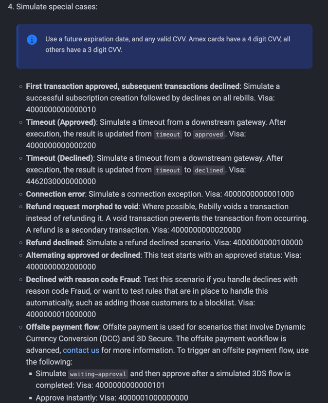
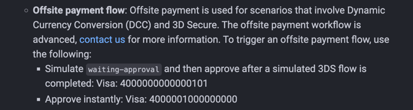
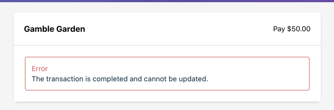
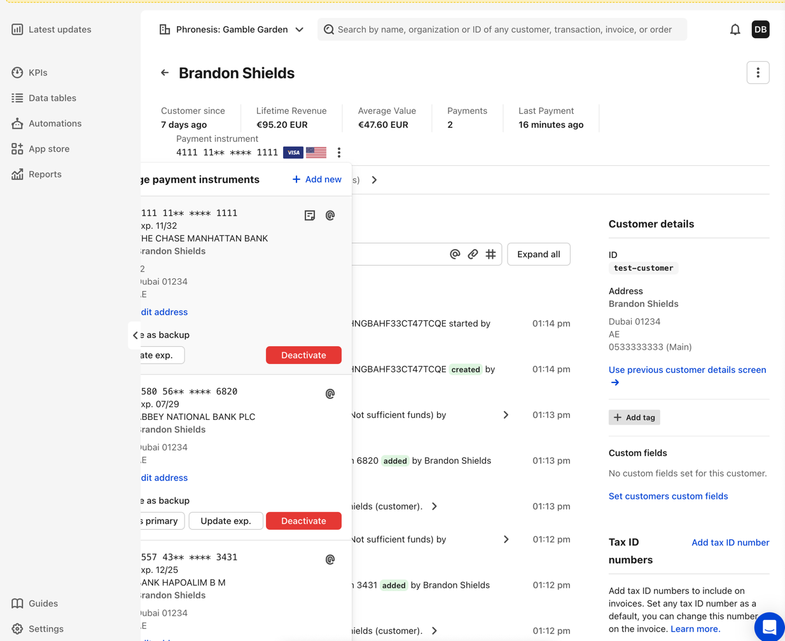
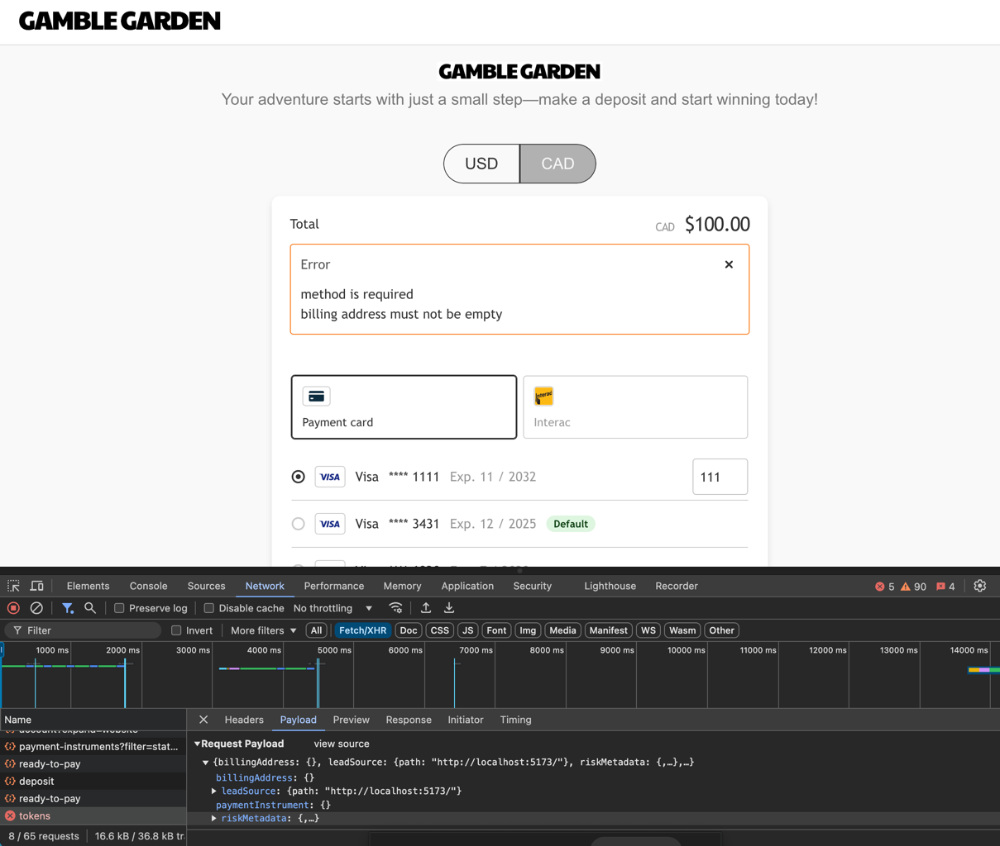
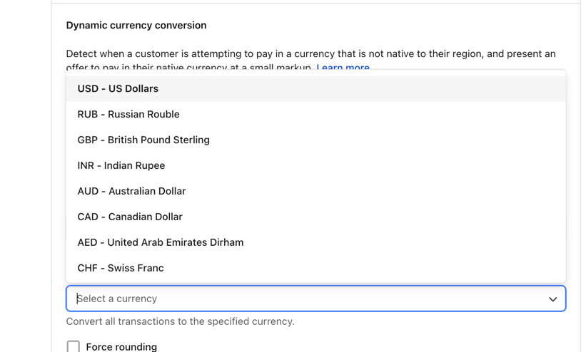
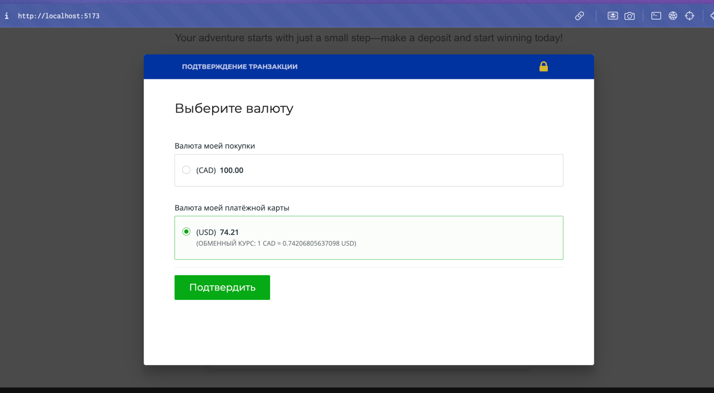
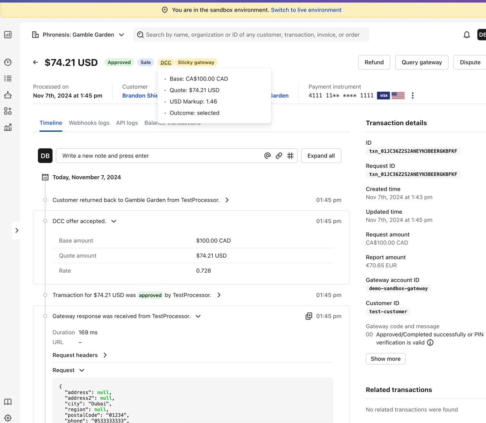
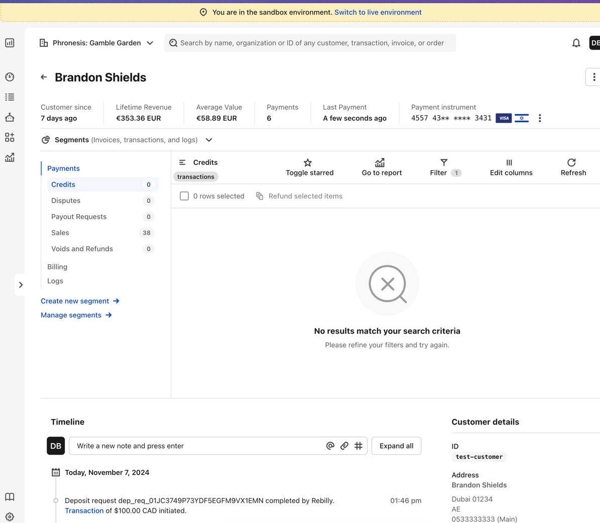

What made you smile?
It was an interesting session, learning a lot about the DCC feature
What did you find confusing?
- Confusing documentation with confusing search. Cannot find docs using search because it is
prioritizing API results. I (Dasha) didn't know where to start.
- Not enough testing sample card details in docs and not convenient to use it

- In docs, DCC is mentioned to be used with off site payment flow, but we don't think that is correct
/
helpful, on the topic of test details

- After transaction was declined (because of insufficient funds), the back button occur the error

- Not sure if we have access to DCC feature or not (no information about availability in sandbox)
- Buggy payment instruments dropdown in Recomm

- Saved test payment card randomly shows two errors, seems like data is not reactive. It only happens
with this card

- We cannot unselect force currency in DCC form

- We had an issue to get the DCC popup shown due to enabled force currency
- DCC popup is not styled properly with the styles provided in configuration

- On transaction view there is no gap between DCC and Sticky gateway pills.
- And on hovering the DCC you cannot copy anything, and the data (rate) is different from the data in
timeline - it's correct but confusing.

- Segments are showing nothing. Feature or bug?
